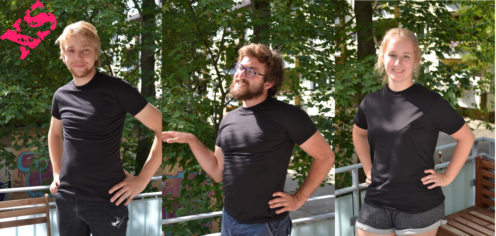
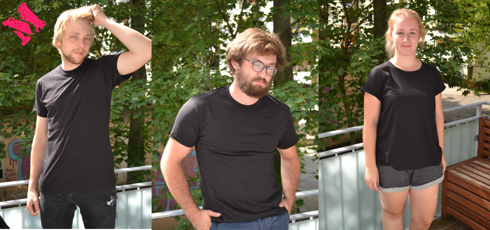
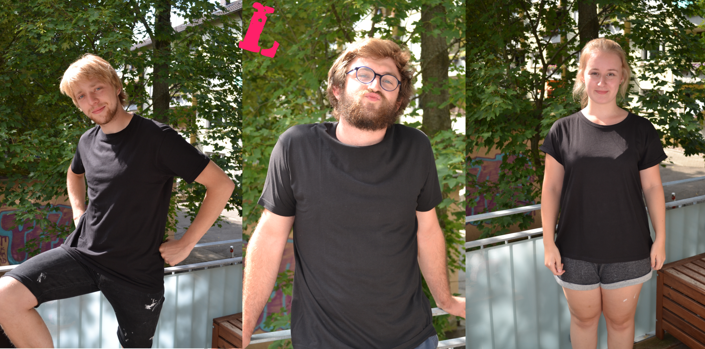

Es gibt supercoolen Merch
Wir haben Merch. Und wir haben T-Shirts. Und um euch die Wahl der Größe etwas zu vereinfachen oder zu belustigen haben wir ein professionelles Shooting veranstaltet.
Eure Models des Tages sind:- Paul, groß (so 1,927 m lang) und dünn
- Jacques, nicht ganz so groß (geschätzt so 1,75 m) und breit beschultert
- Nadja, relativ normal lang (eigene Angabe: 1,65m) und dünn
Shirts
Durchgeführt wurden mehrere Fotoreihen in unterschiedlichen Größen und im Falle von Nadja
meistens in den Fitted-Shirts.
Wir präsentieren:
XS
Paul und Jacques mussten für die Fotos kurz die Luft anhalten und ich (Mali) hatte kurz Angst um die Nähte. Charmant gesagt: Neoprenanzugoptik. Nadja hingegen macht eine sehr gute Figur im nicht-fitted XS.
S
Pauls verführerische Pose lässt es zwar nicht unbedingt vermuten, aber das Shirt sitzt an den Rippen noch nicht unbedingt bequem. Auch Jacques muss bisher noch zugeben, dass an den Achseln etwas mehr Freiheit wünschenswert wäre. Nadja hat sowohl ein fitted (ja gut in unserem Fall heißt fitted nicht unbeding talliert, sondern eher "anderer Schnitt"), als auch ein nicht fitted-Shirt probiert. fitted sitzt gut, aber viel größer sollte man vielleicht auch nicht sein, nicht-fitted sitzt locker gemütlich.
M
Langsam aber sicher nähern wir uns der Sache. Sei man nicht ganz so groß wie Paul, so wähle man M. Es sei denn, man hat Schultern wie Jacques, dieser wünscht sich, er hätte doch lieber ein Shirt in L an. Nadja, ab jetzt nur noch in fitted passt gut in ihr Shirt, wird aber eins in S bestellen. Der Unterschied zum S-Shirt besteht hier eigentlich nur in der Länge.
L
Unsere männlichen Models fühlen sich wohl. Locker um den Bauch herum, lang genug und gute Bewegungsfreiheit an den Schultern. Das fitted Shirt in L sitzt an Nadja nun sehr lässig, wobei es das in M auch schon tat. Sagen wir mal fitted wird von M zu L eher breiter als länger.
XL
Naja. Unsere Models Jacques und Paul sind in der Zwischenzeit weder gewachsen noch dicker geworden und XL sitzt dann doch sehr leger, aber schlimm (soweit man bei den beiden irgendwann von schlimm reden könnte) ist es definitiv noch nicht.
Ich hoffe wir konnten euch ein bisschen bei der Entscheidung unterstützen, zur weiteren Information haben wir noch zwei Maßtabellen zum Vergleich.
Normale Shirts
Fitted Shirts
Hoodies
Die Hoodies wurden leider nicht fotografiert, aber für die Menschen, die auf den letzten zwei ZaPFen waren und aufmerksam die Gemütlichmode der Freiburger betrachtet haben: Es wird Freiburger-Fachschafts-Hoodies geben. Gleicher Schnitt, gleiche Farbe. Wir treten die Farbe nur ungerne an alle hoodiebegeisterten Teilnehmika ab, aber petrol ist halt absolut genial. Der Aufdruck wird natürlich ein anderer.
Zu den Größen:
Es handelt sich bei den Hoddies um Unisex-Pullover, das bedeutet in Beispielen:
- Paul hat ein XL, sitzt dann sehr locker, aber unglaublich gemütlich.
- Jacques hat ein L, auch das passt wundervoll und er würde wieder ein L kaufen.
- Nadja trägt einen Fachschaftshoodie in S, passt super.
- Marlene (hier nicht auf Fotos, aber manche kennen sie, ca. 1,78m lang und schlank) hat ein M, sitzt locker, passt aber gut.
Jogginghosen
Wir haben keine Ahnung, aber eine Größentabelle. Interviewt die Tabelle und hofft das beste. Außerdem solltet ihr eure Mitmenschen motivieren auch Jogginghosen zu bestellen, die werden erstaunlich schnell mit Mengenrabatten garniert.